Copy & Paste
在測試 Token Based Authentication API 時，有個麻煩的地方是 Token 是需要透過 API 取得，然後其它 API 使用，但 Token 可能會有 時效性 或 一次性，所以需要手動去取得 Token ，再 Copy Paste 到其他 API 使用，相當的麻煩。
取得 Token
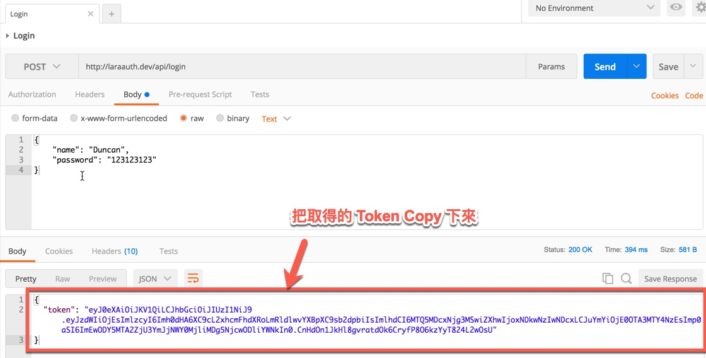
貼上 Token
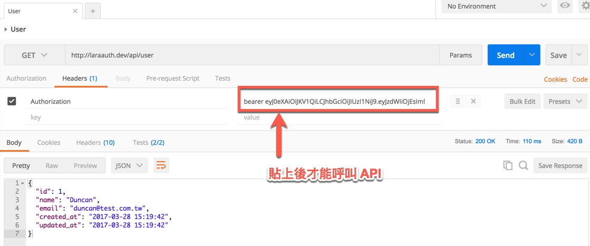
Postman Runner、Test
利用 Postman 提供的 Runner、Pre-request Script、Tests 三個功能搭配，可以解決手動 Copy & Paste 麻煩的問題。
Login API
1.在 Login API 的 Tests 寫個簡單的測試，確定此 API 正常回傳 HTTP CODE 200
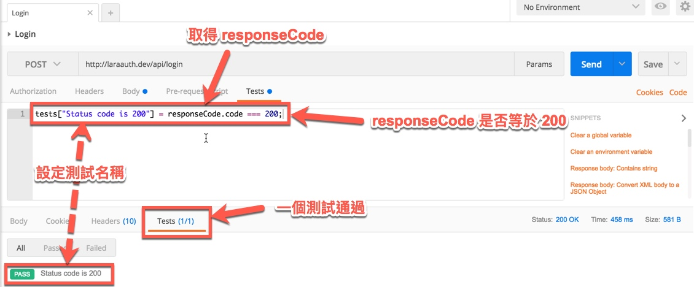
2.測試是否有回傳 token
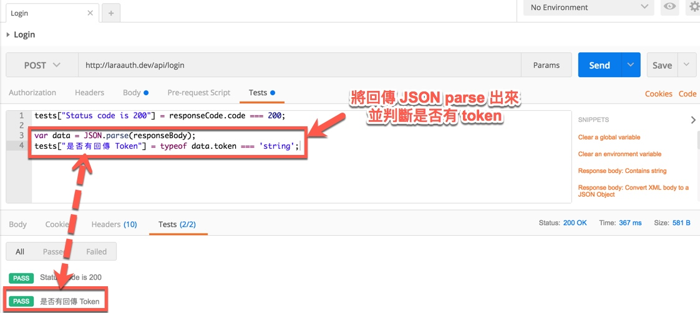
3.將 token 丟給 Postman 提供的物件來儲存
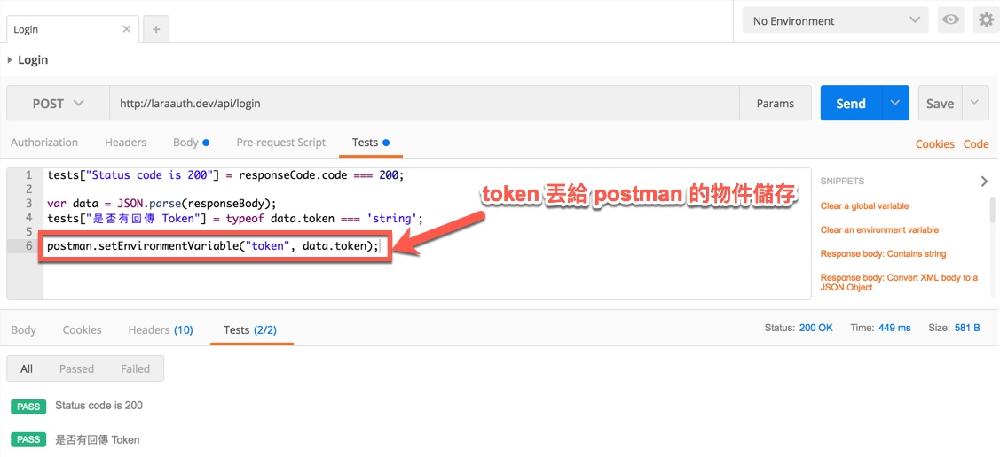
到這些 Login API 要處理的動作就完成
User
1.帶入在 Login API Tests 所設定的變數
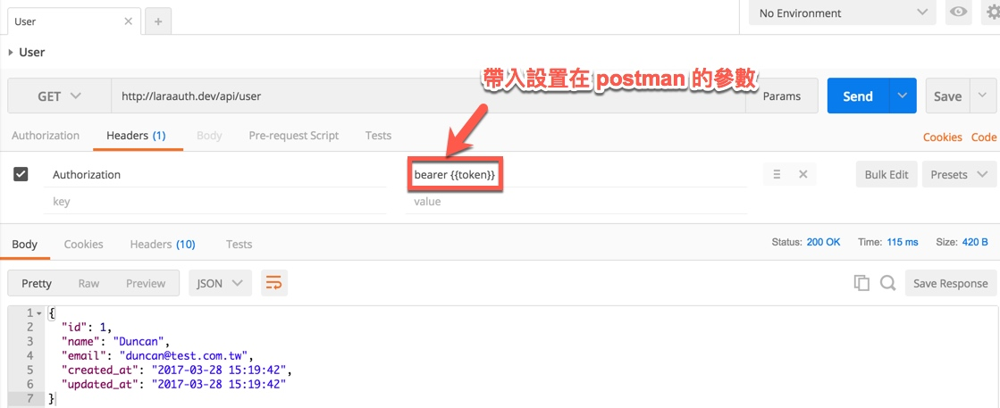
2.一樣寫個簡單的測試來確定 API 是可以正常的
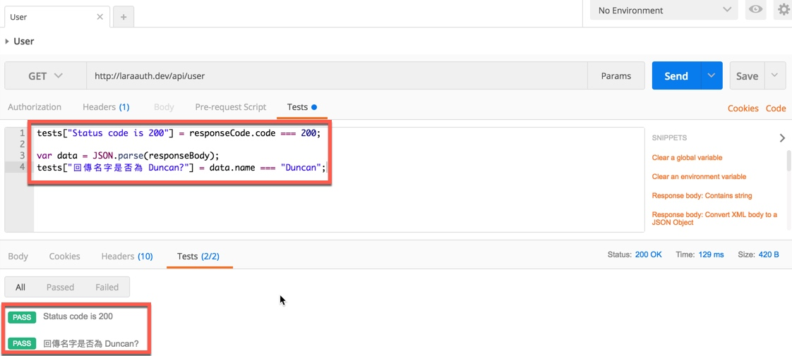
Runner
到此為止可以手動去 Send Login API，然後不需要自己去 Copy Token，直接再 Send User API，這樣可以吃到 token，但這樣如果遇到一次性 Token 的情況還是有點麻煩，所以可以利用 Runner 的功能。
1.使用 Runner 的前題，需要把一次要跑完的 Request 放在同一個 Collection 或 Folder，並且順序要調整好，Runner 會依序執行。
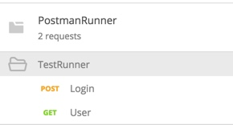
2.開啟 Runner
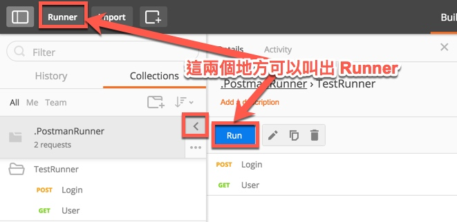
3.選擇 Collection 或 Folder
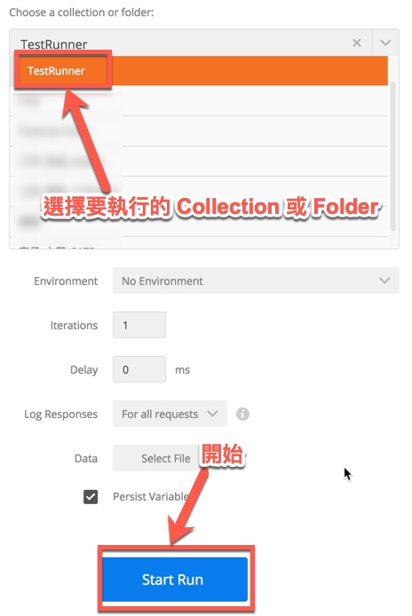
4.執行結果
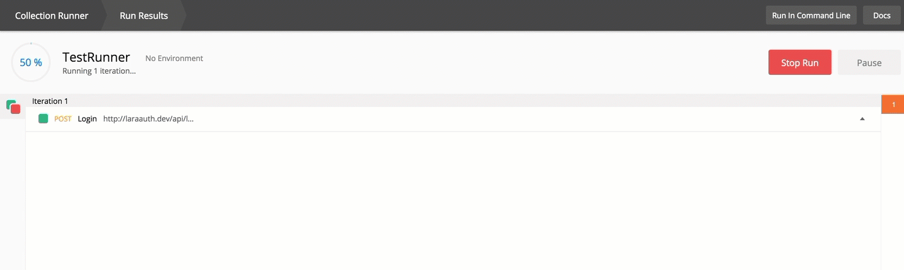
如果 Login、User 兩隻 API 的 Tests 都有寫正確的話，Runner 結果如果都全部 PASS，那就表示 Token 取得正常、API 回傳值如預期。